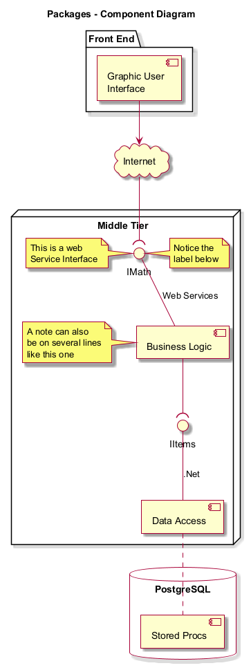

Diagram

@startuml App_test_1
skin rose
skinparam componentStyle uml2
title Packages - Component Diagram
package "Front End" {
component [Graphic User\nInterface] as GUI
}
cloud Internet {
}
node "Middle Tier" {
[Business Logic]
[Data Access] as DA
interface IMath as Math
note left of Math : This is a web\nService Interface
note right of Math : Notice the\nlabel below
interface "IItems" as Items
note left of [Business Logic]
A note can also
be on several lines
like this one
end note
}
database "PostgreSQL\n" {
[Stored Procs]
}
GUI -down-> Internet
Internet -down-( Math
[Business Logic] -up- Math : Web Services
DA -up- Items : .Net
[Business Logic] --( Items
DA .. [Stored Procs]
@enduml